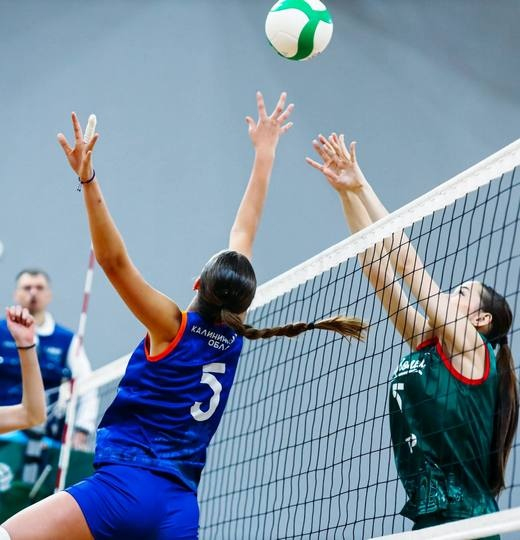
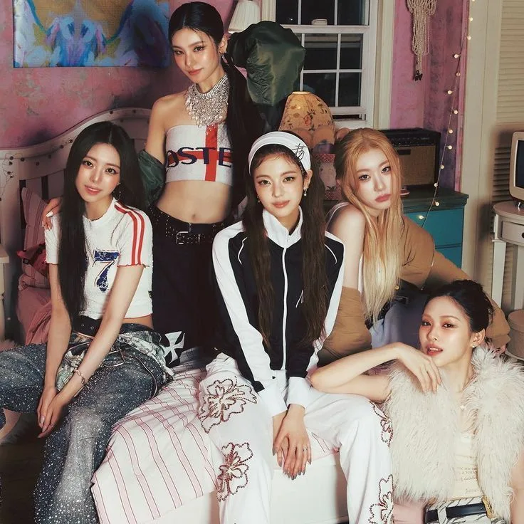
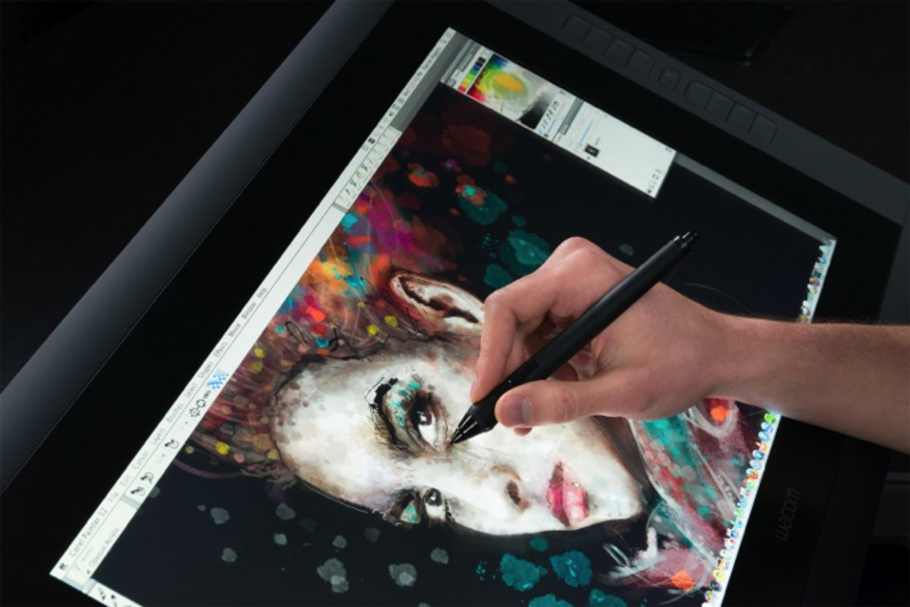
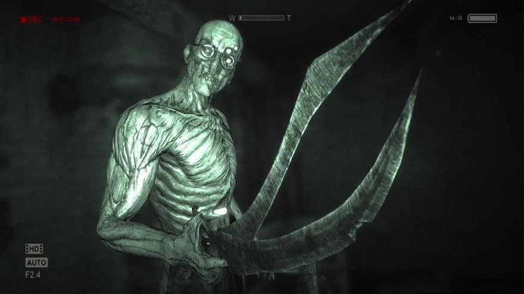
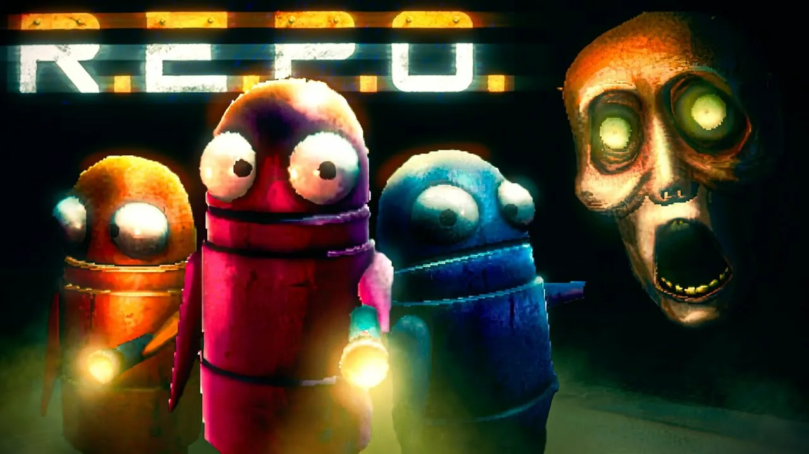

Мои хобби
-
Волейбол

Начала играть в колледже СевКИТиП с 16 лет, была в сборной. Сейчас это просто увлечение для души — играю в удовольствие, поддерживаю форму и встречаюсь с друзьями на площадке.
-
K-pop танцы

Обожаю корейскую поп-культуру. Мои любимые группы: ITZY, Stray Kids, BTS, Aespa, NewJeans, (G)I-DLE, NMIXX, TWICE. Разучиваю каверы для себя дома.
-
Диджитал рисование

Рисую в Adobe Photoshop и SAI Paint Tool 2. Создаю персонажей для своих игровых проектов, делаю иллюстрации и зарисовки по мотивам аниме и фэнтези. Мечтаю однажды оформить собственную 3D игру.
-
Игры (хорроры, кооп, песочница, ММОРПГ)


Обожаю сюжетные хорроры: Outlast, Resident Evil, Silent Hill, Amnesia. Люблю кооперативные приключения с друзьями (Dead by Daylight, Phasmophobia, Lethal Company), а также песочницы вроде Minecraft и ММОРПГ для общения. Игры помогают мне расслабиться и заодно потренировать логику и реакцию.
Ещё я люблю
Читаю фэнтези и смотрю аниме — это мои главные источники вдохновения для рисования и игровых идей.